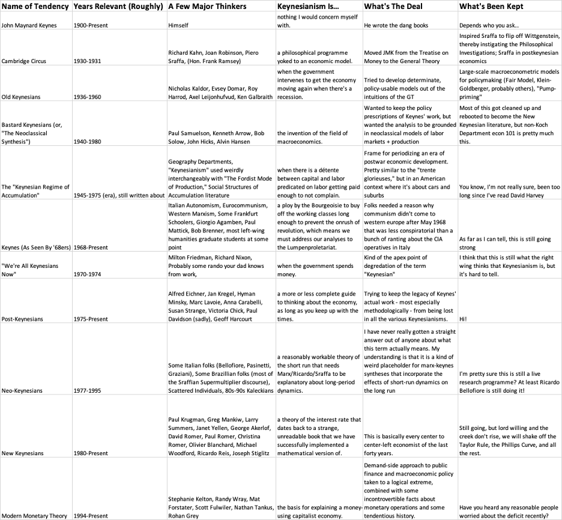

8 Keynesian Economics
Keynesian theory rejects the equilibrium idea of the calm pool of the neoclassical school. The Keynesians think the neoclassical model is not ‘real world’ economics. The Keynesians argue that market economies sometimes get into ‘disequilibrium’ leading to depressions and unemployment, which economies do not get out of unless governments intervene with measures including printing more money or increasing government spending to restore equilibrium.

Mason
A central divide between Keynesian and orthodox macroeconomic theory is the view of the interest rate. Mainstream textbooks teach that the interest rate is the price of saving, balancing consumption today against consumption in the future — a tradeoff that would exist even in a nonmonetary economy. Keynes’ great insight was that the interest rate in a monetary economy has nothing to do with saving but is the price of liquidity, and is fundamentally under the control of the central bank. He looked forward to a day when this rate fall to zero, eliminating the income of the “functionless rentier”.
Kenesian Climate Economics
As applied to climate policy, this view has several implications. First, market interest rates tell us nothing about any tradeoff between current living standards and action to protect the future climate. Second, there is no reason to think that interest rates must, should or will rise in the future; debt-financed climate investment need not be limited on that basis. Third, while investment in general is not very sensitive to interest rates, an environment of low rates does favor longer-term investment. Fourth, low interest rates are the most reliable way to reduce the debt burdens of the public (and private) sector, which is important to the extent that high debt ratios constrain current spending.